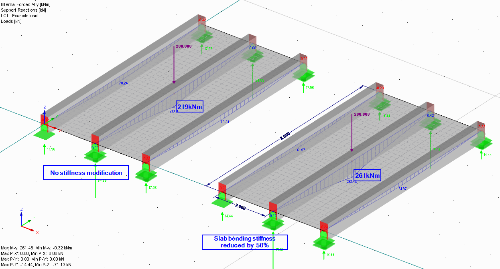

The (non)ideal world #
Time vs. Quality vs. Cost #
The choice between Time <> Quality <> Cost applies everywhere. Casting this idea on the design of buildings using FEA:
- There is a limited time to create a model.
- There are number of modelling/analysis limitations that most structural engineering software has. Or it may be that buying new software is not commercially justifiable;
- Geometry - the real structure will be built imperfectly, there will be deviations from the designed geometry.
- Material properties may be dependent on weather and construction methods that you may not know when doing the design.
- In most of cases there won’t be an opportunity to test a prototype to
fine-tune the assumed behaviour of the structure.
(a major difference from many other engineering disciplines)
The good news is that there are widely accepted simplifications to the model of the structure. An agreed way to work around the limitations. Some of these are “agreed” in building codes, but many of these depend on the engineer’s judgement and/or interpretation of codes.
The main simplifications are related to:
- Material behaviour;
- Stiffness of connections and supports;
- Discounting members that do not contribute to load path;
Simplifications of material behaviour #
None of the construction materials is linear isotropic elastic.
However, for the majority of calculations, we assume that steel, timber, reinforced concrete, aluminium and glass behave as linear isotropic elastic materials.
This lets us:
- Simplicity = Speed. Speed up the modelling process and analysis;
- Sum results from multiple load cases together to estimate behaviour under load combination;
- Use approaches of design proven/tested on many other buildings – omit prototype design if we are operating within the “boundaries” that are covered by building codes.
- Improve the quality assurance (read: checking) process of our models.
In Eurocodes it is explicitly stated that you can use linear elastic analysis for the design of concrete, timber and steel:
5.4 Linear elastic analysis
(1) Linear analysis of element based on the theory of elasticity may be used for both the serviceabiliy and ultimate limit states.
(2) For the determination of the action effects, linear analysis may be carried out assuming:
- uncracked cross sections,
- linear stress-strain relationships and
- mean value of the modulus of elasticity
5.4 Methods of analysis considering material non-linearities
(1) The internal forces and moments may be determined using either:
- elastic global analysis
- plastic global analysis.
[My note:] For finite element models analysis the reference is made to EN 1993-1-5 which contains Annex C with more detailed information, but also allows use of elastic analysis.
(2) Elastic global analysis may be used in all cases
(2) The global structural behavior should be assessed by calculating the action effects with a linear material model (elastic behaviour).
It should be noted that non-linear behaviour is often considered during design checks according to code. i.e. forces from linear elastic FE analysis are used and non-linear or orthotropic behaviour of material is considered when checking stresses in members or buckling capacity.
There are several cases where you would want to depart from these assumptions. For example:
- Calculating exact deflections for concrete structure;
- Efficient design of steel connections and portal frames;
Steel structures #
- By its nature steel is isotropic – plastic material;
- Until steel stresses reach yield strength – the material is linear, isotropic, and elastic;
- After reaching yield strength, the stresses will re-distribute due to plastic behaviour.
Design codes allow the use of the plastic behaviour of steel, in fact, it is the described way for checking the capacity of beams in bending in Eurocodes.
Key points to keep in mind when modelling steel structures using FEA tools:
- Linear elastic = safe, conservative design.
If you don’t let the steel to reach yield stress in your model, your design will still be safe. - 1D elements = Beams/Columns
- Sticking to elastic material for 1D element modelling is a long-proven practice.
- It is preferred to consider plastic behaviour during the element design stage
- 2D elements = surfaces. In most cases, surfaces will be used for
modelling details/connections. Using linear elastic material, you
will often notice high-stress peaks. Most often in:
- Locations of nodal supports or bolts;
- Location of sharp corners;
Ways of dealing with stress peaks:
- Doing additional modelling work - representing supports with their actual area, adding rigid links to represent thickness etc.
- Using isotropic-plastic material and running non-linear analysis;
- Changing the actual geometry of the structure - e.g. considering rounding corners.
- Exercising engineering judgement on how the plastic behaviour will affect linear analysis results. I do not suggest doing this if you are just starting to do structural design. But the more design you will do, the more confident you will become.
Reinforced Concrete Structures #
Reinfoced concrete is the most un-linear un-elastic un-isotropic material of all practically used construction materials:
- RC is composite – reinforcement steel typically taking the tension and concrete taking compression;
- Concrete is non-linear – creep and shrinkage lead to concrete deformation without stress increase in section.
- RC elements are likely to be orthotropic – depending on the direction of reinforcement, there will be enhanced tensile capacity in one/two or all three directions.
- RC elements are plastic – after the concrete is cracked, it stays cracked.
Yet, the design of elements using linear elastic analysis is the most popular way of calculating internal forces in members.
- Composite action is accounted for when designing elements (beams/columns etc.) to code;
- Cracking and creep are either:
- Neglected for some simple calculations, considering that the effect on internal forces distribution may be small;
- Accounted by stiffness reduction factors applied to bending/axial stiffness;
- Considered implicitly and non-linear calculation is done;
- The orthotropic nature of reinforced concrete is neglected at the
static analysis stage – the reinforcement is added only in planes
where it is necessary.
However, choosing the rotation of local axis for 2D elements will be important for desing of slabs.
Key points to keep in mind when modelling RC structures using FEA
It is a “game of stiffness” between beams/columns/slabs:
- In-situ concrete frames will be statically indeterminate structures, with moment transferred through connections; Forces in members are highly dependent on relative stiffness between elements.
- By default, the software will model your elements using uncracked concrete stiffness. Appreciate that due to cracking and creep, almost any member will be less stiff than uncracked concrete.
- Acknowledge that it is impossible to model the exact stiffness of elements. Creep will be time-dependent. Cracking is often governed by overload at the construction stage (and you may not know the construction programme at the time of the design).
- As soon as your building gets taller than ~10 storeys, the axial shortening of columns starts to play the role;
Play the “game” safely:
- Consider upper and lower bounds for stiffness of elements and
connections e.g.;
- If you intend to design the stability system it is safe to release rotations (add hinges) at column ends in the FE model;
- If you intend to design the columns, keep the rotations at column ends fixed.
- Consider cracking and creep when calculating deflections.
- Manual calcs allow for “redistribution” of bending moments –
transfer of some part of hogging moments above the column to
midspan. It won’t be possible to do this using typical FE analysis, however:
- Always stay safe with bottom reinforcement. Be generous, if possible;
- And the other way around – there is no need for design for that very peak value of the hogging moment.
- It is a common practice to design RC slabs using separate models – thus, ignoring the effect of axial shortening on slab design.
Timber structures #
Timber as a material is:
- Orthotropic. Properties along the grain are significantly better than perpendicular to the grain.
- Linear. kind-of. If the instant load is applied, the timber behaves linearly. However, sustained loading causes creep – with time the deflection increases without stress increase in elements.
The orthotropic nature in most cases is considered at the element design check – after static forces have been calculated by linear elastic static analysis.
Similarly, creep is considered for deflections by applying factors to sustained loading. (If you are using Eurovodes, see section 2.2.3 of EN 1995-1-1)
However, the main thing to remember when modelling and designing timber structures is: Connections govern the design capacity. Often, connections also govern the member sizes.
Many of programs have embedded code-checking modules that will allow you to run analysis, obtain internal forces, run bending/shear/compression/deflection checks according to code, and give you a confident utilisation under 100%... And if at least preliminary design of connections have not been done when choosing element sizes – there may be unpleasant surprises.
Simplifications for connections #
I do remember when I first started modelling structures. One of my first questions was – where should I add hinges = where should the rotations at member ends be released?
Yes, in the “ideal world” each connection has stiffness. But in most cases, you can model the connection as either fixed=continuous, or pinned=not restraining any rotation.
The very simplified recipe would be:
- Release all the steel connections but do account for eccentricities (e.g. using rigid links) at column/beam connections.
- Treat precast concrete connections similarly to steel ones – but do model eccentricities that are caused by corbels. Keep column-to-column connections fixed.
- Keep in-situ concrete elements with fixed ends.
- Release all the timber connections and timber-to-steel connections. Unless you are intending to specifically design a moment frame.
Many engineers at this point will shout: “Not true! steel structures have plenty of moment connections!” Well.. true.. but one must start somewhere. There are typical pinned and moment connections shown in the Steel section of notes
The area where you must be very careful regarding connections – pinned or sliding connections with a large force in one direction, but a “free movement” is assumed in any other:
- It is common to discount friction in calculations. However, you can’t expect the beam support to have a completely sliding support if there are large vertical support reactions. (Teflon bearings are not cheap either)
- For a steel connection with large axial force, many bolts and/or thick plates may be required. An assessment should be made as to whether you can still consider this connection as pinned.
The stiffer load-path wins #
In cases where there are multiple load paths, the load will “choose” the stiffer one.
This statement can also be flipped the other way around. The considered load path will be redundant if there is another load path that is significantly stiffer.
Examples of this statement are:
-
Tension bracing. Traditional bracing in frame buildings (steel, precast concrete, timber). One of the braces will be in tension, another in compression. The tension one will be relatively stiff and carry all the force and ensure stability. The compression one will have a tiny capacity because of buckling effects. It will be redundant.
-
Rigid links (or “rigid members” or “coupling” in some software) ensure that the defined link is the stiffest element around and the load gets directly transferred to the linked node.\
Two most popular ways of using rigid links:
- To represent parts of the structure you want to avoid modelling but will deal by some other means. A popular example is modelling eccentricities at connections.
- To use a single node to represent a support that is actually an area
support:
- Representing bolts or support areas when modelling 2D surfaces – by using rigid links you can avoid huge stress peaks appearing in results;
- Representing support of core walls – thus calculating an axial force and moments for the core wall overall, rather than dealing with multiple linear supports.
-
In-situ concrete structures. Cracking can significantly reduce stiffness. The smaller and heavier loaded elements will crack more than larger and lightly loaded. This will “attract” more loads towards lightly loaded elements.
An example below is a ribbed deck with a concentrated load on top of one of the beams.
- The first linear calculation shows that about 35% of the load is transferred to adjacent beams, max bending moment in middle beam = 219kNm.
- However, note that the thin slab in the transverse direction is likely to be cracked.
- If the slab has lost roughly half of the stiffness because of cracking, then it only transfers 28% to adjacent beams and the bending moment 261kNm in the beam under the load is 20% more!
- ..and yes, the beam will also have some reduction of stiffness due to cracking.. but do remember to play the “stiffness game” safely! Note that before the widespread use of FE calculations, it is likely that the beam under the load would have been designed to carry the entire load (the approach I support myself, see Concrete design section) and the beam would have been designed for 400kNm bending moment.
Example of “stiffness game” between beams and slabs
